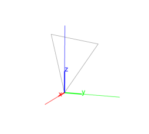
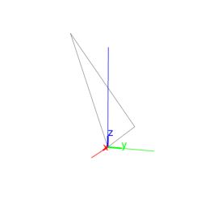
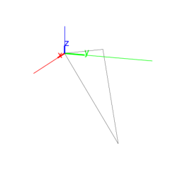

13.7.3 Right triangles in space: right_triangle
See section 12.8.3 for right triangles in the plane.
The right_triangle command returns and draws a
right triangle. It takes as arguments one of the following:
-
Three points, A, B and P.
right_triangle(A,B,P) returns and draws the right
triangle BAC with the right angle at vertex A.
The first two points A and B are vertices of the
triangle, the third point P determines the plane and
orientation of the triangle. The orientation is so that angle
BAP is positive. The length of AC equals the
length of AP.
Input:
A := point(0,0,0); B := point(3,3,3);
P := point(0,0,3)
then:
right_triangle(A,B,P);
Output:

- Two points, A and B, and a list consisting
of a point P and a real number k.
triangle_rectangle(A,B,[P,k]) returns and draws the right
triangle BAC with the right angle at vertex A.
The first two points A and B are vertices of the
triangle, the third point P determines the plane and
orientation of the triangle as above. The length of AC
is |k| times the length of AP. Angle BAC
has the same orientation as BAP if k is positive,
angle BAC has opposite orientation as BAP if
k is negative. So tan(β) = k if β is
the angle CAB.
Input:
right_triangle(A,B,[P,2])
Output:

Input:
right_triangle(A,B,[P,-2])
Output:

right_triangle can take an optional fourth argument,
which is a variable which will be assigned to the third vertex of the
triangle.
Input:
right_triangle(A,B,[P,2],C)
then:
coordinates(C)
Output:
[-3*sqrt(2), -3*sqrt(2), 6*sqrt(2)]